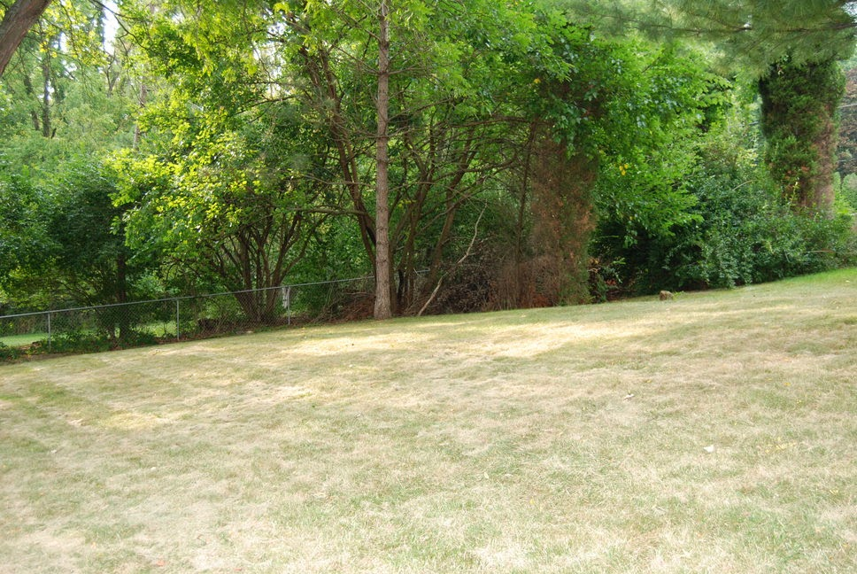
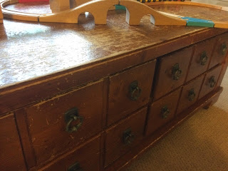

CSE 891 Section 1: Parallel Computing: Fundamentals and Applications
Blog post added by Anonymous
I was asked to give a talk about the HPCC and my research. Here are the slides if anyone is interested:
2014-09-10 Parallel Programming Class.pdf
- Dirk
Blogpost migrated from ICER Wiki using custom python script. Comment on errors below.
read moreFish Tank Kids Coat Rack
This one was a lot of fun. We have a coat area down by the back door landing. I used those plastic hooks with the special double sided tape that allows you to remove the hooks without damaging the wall. Unfortunate, the kids managed to pull the hooks off taking …
read more2014-2015 New Faculty Orientation
Blog post added by Anonymous
Here are the slides for introducing new faculty to iCER. Thanks to Ben Ong for editing and updating these slides for me.
2014-08-25-faculty_orientation.pdf
- Dirk
Blogpost migrated from ICER Wiki using custom python script. Comment on errors below.
read moreVacation fort
We are spending time with the kids at our aunt and uncle's cabin in northern Michigan. This is an old hunting cabin but it is not exactly roughing it. There is air conditioning and internet.
I am worried that the kids are spending too much time inside on the devices …
read moreBackBlog - Teleporter video
We through a Star Trek themed surprise party for my wife and I thought it would be fun to see if I could make a transporter effect.

To start we took two pictures, one with everyone in an away team formation and one with just the background

I then wrote …
read moreBug bots

I like the simple fun of brushbots; little robots, typically made with toothbrush heads, that use a cell phone vibrating motor to scoot around a table (you can buy kits here: http://www.makershed.com/products/brushbots). I decided that this would be a great project for me to do …
read moreCoffee table drawer


The kids have really done a number on our living room coffee table. The top has been "distressed" by biting, thrown toys and lots of drumming.

The drawers have also been used as steps to get up on top of the table. Most of the hardware components have broken under …
read moreGears with logos
Milk Jug Bird Feeder
My eldest daughter wanted to make a birdhouse/feeder. It was the middle of winter and I think she was thinking of building it out of wood. However, I realized what she really wanted to do was decorate it using some extra stickers she had. So, we compromised and I …
read moreDiet Coke and Mentos

As any true geek dad, I have always wanted to do the Diet Coke and mentos experiment. However it is messy and the logistics of getting the mentos in the coke without getting crazy sticky is challenging. I did a quick search of thingiverse and found a couple of wonderful …
read more